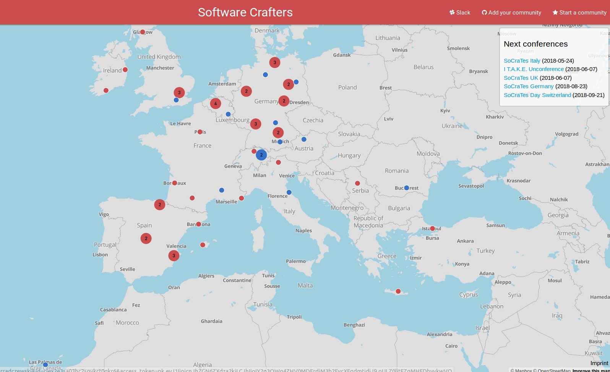
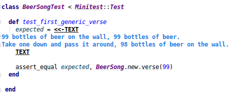
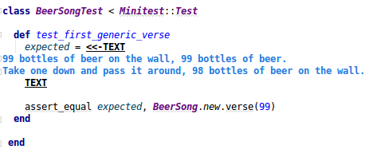
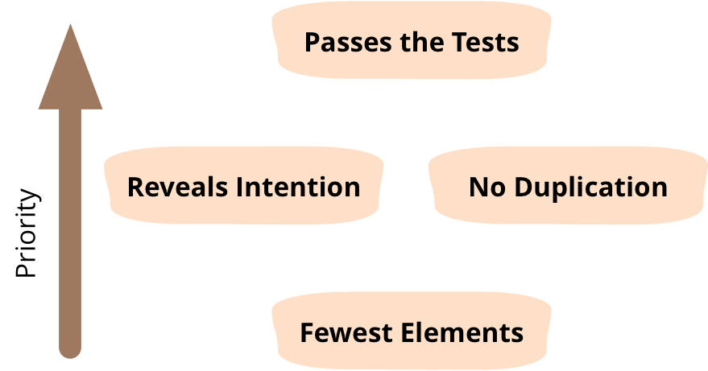
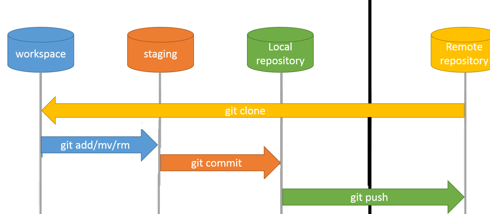

Code-Retreat
and
Software-Crafting
Gaspard POINTEAU
@Gaspard_PO
Vous êtes qui ?
Vous voulez quoi ?
Et sinon, ça va ?
Solutions to most of tech problems:
- slow down
- sit down and talk to people
- try things
- rest, go home
Fonctionnement Pratique
- 10h - 18h
- Pauses !
- Basé sur du code retreat et de la pratique
- Binomes ou Mob
- Pas obligé de finir
- A la carte. On est agile, on s'adapte au besoin
Programme
- Agilité
- Specs
- Tests, TDD
- Qualité, Clean-Code
- Pair/mob, review
- Legacy, Refactoring
Agile

TL; DR
- But
- Avoir le bon produit
- le livrer rapidement
- Moyens
- Itérations
- Auto-organisation
eXtreme Programming

XP values
- Communication
- Simplicity
- Feedback
- Courage
- Respect
XP Practices


Software-Craftsmanship

Naming
Is Craftsmanship inclusive? and Crafting? and Craft?
Craftsman, craftswoman, craftsperson, crafter
Software-Crafting
Practices
Tests, TDD, Clean-Code, Naming, Comments, Communication, Code-review, Pair-programing, Mob-programing, Simple-Design, SOLID, Iteration, Baby-steps, Refactoring, Mentoring, Collective ownership, Self-organization, Continuous Integration, Continuous Delivery...
Community
 https://softwarecrafters.orgConferences

SoCraTes DE, UK, Italy, Canaries, France, BE, Switzerland, US ...
CodeFreeze, I T.A.K.E. Unconference
Continuous-learning
mentoring
kata
dojo
coderetreat ...
Specs

Imprécises
Rédigez un cahier des charges pour écrire des nombres en lettres
pluriel de "vingt" et "cent".
"et-un" ou "-un" ?
Facile != Simple
Et la Belgique ? et la Suisse ?
Le besoin peut évoluer.
Le besoin va évoluer.
"Si votre besoin n'évolue plus, c'est que vos utilisateurs sont morts."
Itérations
- peu de risques
- possibilités de changer
- adaptation en fonction des retours d'utilisations
- obligé de découper en tout petits incréments
- plus le temps passé à écrire les specs est court, plus on accepte de les changer
User Story

SMART :
- Specific
- Mesurable
- Achievable
- Relevant
- Time Bound
6 D
- Désirable
- Démontrable
- Découpée
- Dérisquée
- Définition de Fini
- Discutée (ou Débattue)
Cycle en V

Problèmes :
Ce qui est implementé n'est que ce que les devs ont compris
On fini par livrer un logiciel qui "marche" mais qui n'est pas utilisable.
Soit specs et tests sont redondant (donc inutiles)
Soit specs et tests sont incohérents (donc il faut recommencer)
Les "données" utilisées ne correspondent pas du tout à des cas d'utilisations
(type de données, volume, contenu, temps ...)
Le PO dit "là, par exemple, si je veux faire ... ça ne marche pas" avec un cas réel d'utilisations
autant utiliser les exemples dès le début !
Calculatrice Lorsque je saisis 30, j’appuie sur le bouton +, je saisis 45, j’appuie sur le bouton égal, alors j’obtiens 75.
Orthodromie La distance orthodromique entre Paris (48°51’N – 2°21’E) et Montpellier (43°36’N – 3°53’E) est de 595 kms.
Calcul d’agios Sur le 4e trimestre 2012, un compte est débiteur de 451€ du 13/11 au 28/11 et de 342 € du 08/12 au 27/12, avec un taux d’intérêt de 20% annuel. Les intérêts sur la période sont de 7,27 €
Et si on utilisait ces exemples d'utilisations comme critères acceptances ?
ATDD : Acceptance Test Driven Development
Et si on les automatisait ?
Tests fonctionnels de non-regression
Bonus:
Si on a un cas bien décrit pour être automatisable, on a un exemple pour la démo et la doc
d'utilisation
Super - Bonus
Les Devs et le business parlent le même langage
Test
L'application sera toujours testée.
Si ce n'est pas pendant le développement, ça sera pendant l'utilisation, par des clients mécontents.

Et si en plus d'avoir les tests "fonctionnels" à remplir, on poussait à l'extreme :
pour chaque tache de la user story ?
pour chaque méthode ?
d'abord écrire le besoin, puis le réaliser.
Test Unitaires
FIRST
- F - Fast
- I - Independant
- R - Reproductible
- S - Self-Valid
- T - Timely
 

TDD
Test driven development ?
Test driven design ?
l'objectif n'est pas les tests, c'est le design !
le batterie de tests n'est qu'un effet de bord en cadeau
Focus sur le besoin !
oblige à réfléchir à ce que je veux en sortie
ce dont j'ai besoin en entrée
avant de faire la prod

Red
Quel est le test à écrire pour faire la plus petite étape ?
Commencer par fail : tester le test
Green
Quel est la plus petite étape à faire pour faire passer le test ?
Refactor
On nettoie
On fait apparaître des concepts métiers

Avantages
- écrit les specs en même temps que les tests
- plein de tests pour la non-regression
- oblige à définir le besoin avant de coder
- code testable == code modulaire
- YAGNI : on évite d'écrire du code inutile
- gain de temps : pas de débuggueur, ni de logs
Pratique : FizzBuzz
Unitaire
un seul concept métier par test
Calculatrice : division
un test pour la division
un test pour l'erreur de division par zéro
un seul assert ?
XUnit (Juni, NUnit, CppUnit ...)
d'autres frameworks
vous pouvez facilement créer le votre
1st class citizen
Les règles qui s'appliquent au code s'appliquent aux tests
qualité
clean-code
refactor => setup, teardown
git
relecture

assert par défaut
assertTrue(bool); assertFalse(bool);
fail();
assertEquals(actual, expected) ;
assertEquals(actualDouble, expectedDouble, delta) ;
assertNotEquals(actual, expected)
assertArrayEquals(actual[], expected[]);
assertSame, assertNotSame, assertNull, assertNotNull
...
Fluent assertion
assertThat(actual).isEqualTo(expected);
assertThat(list).isNotEmpty().hasSize(5)
.isSorted()
.containsExactlyInAnyOrder(value1, value2)
.allMatch(insideValue -> insideValue.getSomeField().equal(something))
assertThat(contentOf(xFile)).startsWith("The Truth")
.contains("Is Out").endsWith("There");
assertThat(directory).isDirectory().hasSameContentAs(otherDirectory);
assertThatExceptionOfType(SomeException::class.java).isThrownBy({ methodToTest() })
.withMessageContaining("boom")
.withCauseInstanceOf(IOException::class.java)
assertThat(jack).isEqualToComparingFieldByFieldRecursively(jackClone);
Java : assertJ, Harmcrest
Javascript : chai, jest
PHP : phpspec, atoum
Go : gomega, Ruby : rspec
Mocks
Les mocks permettent de créer des objets plutôt que d'utiliser les objets réels, de définir des comportement, d'espionner, de surveiller des actions ...
@Test
public void shouldSaveFileOnS3ThenDelete() throws InterruptedException {
FileSystemService fileSystemService = mock(FileSystemService.class);
File aFile = mock(File.class);
when(fileSystemService.getFile(uuid)).thenReturn(aFile);
serviceToBeTested.saveFileOnAWS(uuid);
verify(awsStorageService).putObject(bucketName, uuid, aFile);
verify(aFile).delete();
}
- Mock -> objet "vide"
- Stub -> a un comportement défini
- Spy -> enregistre des interractions
Automatisation
les tests ne sont utiles que s'ils sont lancés
CI
- Pour vérifier que les tests passent quelque soit l'environnement
- Pour les batteries de tests très longues
- Parce que les devs oublient des fois de commiter !
- Pour tester tout le code et les régressions
Test End-to-End : fausse bonne idée
- Pas possible d'être exhaustif
Nécessite beaucoup de tests (combinatoires) - Cher
définir l'environnement (bdd serveur, fichier, appels externes, ...)
définir toutes les entrées et toutes les sorties ... - Long
donc executés rarement - Fragile
faux positifs si changements d'environnement, d'année ...
uniquement pour valider les cas principaux et représentatifs des US
BDD - Cucumber
le business écrit dans sa langue :
Feature: Is it Friday yet?
Everybody wants to know when it's Friday
Scenario Outline: Today is or is not Friday
Given today is <day>
When I ask whether it's Friday yet
Then I should be told <code>
Examples:
| day | answer |
| "Friday" | "TGIF" |
| "Sunday" | "Nope" |
| "anything else!" | "Nope" |
l'équipe de dev fait le lien entre le langage business et le code :
public class Stepdefs {
private String today;
private String actualAnswer;
@Given("^today is \"([^\"]*)\"$")
public void today_is(String today) {
this.today = today;
}
@When("^I ask whether it's Friday yet$")
public void i_ask_whether_is_s_Friday_yet() {
this.actualAnswer = IsItFriday.isItFriday(today); // Call to prod code
}
@Then("^I should be told \"([^\"]*)\"$")
public void i_should_be_told(String expectedAnswer) {
assertEquals(expectedAnswer, actualAnswer);
}
}
Attention: les tests permettent uniquement de prouver ce qui marche, pas l'absence de bugs
Code Retreat
Kata
un petit excercices de code
un échauffement, une étude, un petit entrainement
prendre le temps, sans la pression du résultat
Coding Dojo
Lieu où l'on étudie la voie du code
- Dave Thomas : katas du développeur
- Laurent Bossavit : faisons les en groupe
Global Day of Code Retreat
Un gros coding Dojo
d'une journée complète
dans le monde entier
Comment ?
- un binome
- un ordinateur
- un langage
- IDE, test runner ...
- un sujet
- des contraintes
45 minutes,
et ...
Supprimez votre code !
Qualité
La qualité d'aujourd'hui est la vélocité de demain.TL; DR : 4 rules of Simple design
Kent Beck
TL; DR 2:

Les autres outils sont des indicateurs, mais en aucun cas des mesures fiables, et encore moins des objectifs.
La dette technique est un choix.
C'est un emprunt qu'il faudra rembourser, avec des intérets.
Valide pour certains projets "one shot" :
un petit script pour trier un tas de données, un spike pour essayer une techno ...
Mais la plupart du temps les one-shots sont maintenus pendant des années.
later is never
Clean-Code

Robert C. Martin aka Uncle Bob
Clean-Code
"Any fool can write code that a computer can understand. Good programmers write code that humans can understand."
Martin Fowler
"Mal nommer les choses, c'est ajouter au malheur du monde !"
Albert Camus
"There are only two hard things in Computer Science:
- cache invalidation,
- naming things" Phil Karlton
Utilisez du vocabulaire métier
public List<int[]> getFlg() {
List<int[]> list1 = new ArrayList<int[]>();
for (int[] x : theList ) {
if (x[0] == 4)
list1.add(x);
}
return list1;
}
public List<Cell> getFlaggedCells() {
List<Cell> flaggedCells = new ArrayList<Cell>();
for (Cell cell : gameBoard ) {
if (cell.isFlagged())
flaggedCells.add(cell);
}
return flaggedCells;
}
Séparez les niveaux d'abstraction
public RGBColor readCurrentColor(BlinkLed led) {
device.sendCommand(new ReadColorRequest(led));
byte[] response = device.readResponse();
int red = response[2] >= 0 ? response[2] : response[2] + 256;
int green = response[3] >= 0 ? response[3] : response[3] + 256;
int blue = response[4] >= 0 ? response[4] : response[4] + 256;
return new RGBColor(red, green, blue);
}
public RGBColor readCurrentColor(BlinkLed led) {
device.sendCommand(new ReadColorRequest(led));
byte[] response = device.readResponse();
return extractColor(response);
}
private RGBColor extractColor(byte[] response) {
int red = convertToPositiveInt(response[2]);
int green = convertToPositiveInt(response[3]);
int blue = convertToPositiveInt(response[4]);
return new RGBColor(red, green, blue);
}
private int convertToPositiveInt(byte byt) {
return byt >= 0 ? byt : byt + 256;
}
Séparez les niveaux d'abstraction
- Extract Method
- Extract Variables
- Extract Field
- Donner des noms parlants
- Une seule fonctionnalité par méthode
Commentaires

Commentaires

Inutiles ou Faux
/*
* A comment to please checkstyle
*/
/*
* Set the port
*
* @params port
*/
public void setPort(Port port) {this.port=port}
...
} /* end for */
dao.flush();
default :
break;
} /* end switch */
} /* end if */
} /* end if */
} catch ...
- Soit obsolètes et faux
- Soit redondant et inutiles
Exceptions:
- Public API
- Interface
- Les Test expliquent le Quoi
- Le Code explique le comment
Loi de Demeter
Pas bien !
a.getB().getC().doThings();
Bien !
a.doThings();
Injection de dépendances
Pas bien !
public class Client {
private Service service;
public Client() {
this.service = new ServiceLieAUneDatabasePrecise();
}
public String greet() {
return "Hello " + service.getName();
}
}
Bien !
public class Client {
private Service service;
public Client(Service service) {
this.service = service;
}
...
}
Des frameworks permettent de faire "facilement" de l'injection de dépendances.
A voir si la complexité et les contraintes qu'ils apportent sont compensés.
Ne jamais coupler avec des librairies externes !
Jamais
Toujours utiliser des abstractions et des façades
Smells
- Singleton
- Tight coupling
- Untestable
- Premature Optimisation
- Indescriptive naming
- Duplication
Mieux
- SOLID principles
- null -> objet "vide"
- héritage -> compositions
- if/switch -> polymorphisme
- pas de singletons
Solid
- S - Single-responsiblity principle
- O - Open-closed principle
- L - Liskov substitution principle
- I - Interface segregation principle
- D - Dependency Inversion Principle
S - Single-responsiblity principle
A class should have one and only one reason to change, meaning that a class should have only one job.
Evitez les Managers
Un manager fait un peu de tout mais mal, beaucoup de rien et embrouille tout le monde.
O - Open-closed principle
Objects or entities should be open for extension, but closed for modification.
Penser héritage
L - Liskov substitution principle
Let q(x) be a property provable about objects of x of type T. Then q(y) should be provable for objects y of type S where S is a subtype of T.
objects in a program should be replaceable with instances of their subtypes without altering the correctness of that program.
I - Interface segregation principle
A client should never be forced to implement an interface that it doesn't use or clients shouldn't be forced to depend on methods they do not use.
D - Dependency Inversion Principle
one should "depend upon abstractions, [not] concretions."
A. High level modules should not depend upon low level modules. Both should depend upon abstractions.
B. Abstractions should not depend upon details. Details should depend upon abstractions.
4 rules of Simple design
Kent Beck
Legacy-Code
Définition
- existant ?
- de mauvaise qualité ?
- vieux ?
- on ne sait pas ce qu'il fait ?
- plein de dépendances ?
Du code sans tests
La seule vérité est le code
Les specs ne sont pas à jour et pas fiables
Ne rien changer au fonctionnement
Un bug suffisamment vieux devient une feature
Toujours demander au PO
Pourquoi refactorer ?
Le code fonctionne très bien, ne pas refactorer pour le principe.
C'est couteux et risqué.
Pour comprendre le fonctionnement ?
Pour ajouter une feature ?
Pour rembourser la dette ?
"Make the change easy before making the easy change."
Kent Beck
Time-boxer
Gestion de version
Pouvoir toujours revenir à un état stable.
S'autoriser à refactorer, renommer, bouger des choses pour rien, juste pour découvrir le code.
Golden Master Test
Le système est une boite noire, on vérifie que pour les mêmes entrées on a toujours les mêmes sorties
- Vérifier avec la couverture de code. Attention, pas toujours fiable
- Vérifier en changeant des bouts de code. (Red du TDD)
- Sérialiser les objets, ou rediriger les sorties.
- Librairie Approvals
- Utiliser des données représentatives (copie de prod)
- Vérifier qu'on ne touche pas d'environnement de prod.
Test Unitaires
Créer une batterie de tests unitaires qui permmettent d'avoir des specs.
- Rendre le code testable en supprimant les dépendances
- Commencer par la branche la plus courte
- Penser à l'héritage et à faire un objet testable
- Outils de refacto automatisés de l'IDE
Refactorer
- Casser les appels à l'extérieur (BDD, fichiers, mails ...)
- Casser les appels statiques
- Mettre de l'injection de dépendances
- Commencer par la branche la plus longue
- Tester en continue
- Baby-steps
Nommer les choses
- Commenter pour donner un nom a un paquet de lignes
- extraire ces lignes dans une méthode
- Donner comme nom à la méthode le commentaire
- Supprimer le commentaire
Comprendre ce que fait le code et mettre cette compréhension dans le code.
En dernier recours
Reflection
Mock d'objet statiques
Quand ?
Règle du scout : je rends l'endroit plus propre que quand j'y suis rentré
Tout d'un coup
au fil de l'eau
Ne pas changer les interfaces externes et API sans accord du PO
ce n'est plus du refactoring, mais du changemnt
Code-review
Pourquoi ?
- vérifier que la feature est bien réalisée
- éviter des bugs
- apprendre la technique
- apprendre le métier
- partager les normes de codage
l'apprentissage est dans les deux sens
- Partir du principe que tout doit être questionné
- Partir du principe qu'il y a toujours une explication
Toujours respecter les autres
Que l'on soit l'auteur-e du code ou la personne qui relit.
On critique le code, pas la personne
Hard with code, soft with human
Ce n'est pas
- Vérifier que les tests passent
- Parler du formattage
- Parler de l'architecture
En asynchrone, sur un outil de gestion de conf.
En discutant au bureau de son/sa collègue.
l'écrit peut être ambigue, surtout dans une langue qu'on maitrise mal.
Attention aux tournures.
Préférer les questions plutôt que les affirmations.
500 lignes de code à relire ? Ok, on merge
15 lignes à relire ? 15 commentaires ou questions.
Faire des toutes petites merge requests
Pair-programming
Pourquoi ?
- éviter des bugs
- apprendre la technique
- apprendre le contexte métier
- partager les normes de codage
- propriété collective du code
- obliger à verbaliser le problème et la solution
- discuter des besoins avant de coder
- augmenter la concentration
- être une équipe, discuter avec des humains
Très fatiguant
- commencer petit (1-2h par jour)
- faire des pauses régulières
- Pomodoro
- évitez les grands open-spaces
- changez de binômes
- faites tourner le clavier
- toujours dans le respect de l'autre
Pas possible ?
- ne demandez pas, faites le.
- ne nommez pas ça "pair-programming", demandez juste de l'aide
- utilisez un canard en plastique (ou n'importe quel objet)
De toutes façons vous en faites déjà !
Même en remote ?
Comme tout passage en remote :D
Avec des "étrangers" ?
Mob-programing
Pourquoi s'arrêter à 2 ?
Git
Un serveur à distance, un repo local et un workspace
Git


Branch : sépare en deux pour travailler isolé
Merge : combine deux branches


origine, merge et rebase
git init : crée un repo local sans avoir de repo à distance, pour démarrer
git rebase -i HEAD~3 : permet de réécrire les 3 derniers commits
git stash : permet de cacher les fichiers locaux
git stash pop : sur du dernier stash
Guide interactifContinuous Integration
Principe : un serveur "récupère" les sources et lance un build et tout les tests
Ca permet d'éviter les soucis à base de "ça marche sur ma machine"

- les devs travaillent en local
- puis commitent sur le repo
- le serveur CI surveille le repo et checkouts les modifications
- le serveur CI lance un build, des tests, des analyses ...
- le serveur informe l'équipe du résultat (slack, "radiateur", son ...)
- une revue de code humaine peut faire partie du workflow
- une analyse automatique du code peut faire partie du workflow (sonar)
- si KO : toujours réparer le build en priorité
- Profiter de l'automatisation pour lancer des tests plus longs (performances) la nuit ou le week-end
Pas de commit sur un build cassé : on répare d'abord.
- défini clairement le process de build
- permet de valider fréquemment
- permet d'avoir toujours une version livrable
Pas de commit sur un build cassé : on répare d'abord.
Continuous Delivery
Et pourquoi ne pas automatiquement déployer une nouvelle version ?
Soit en prod, soit en pré-prod, ou béta pour test et démo.

Continuous Delivery / Deployement

Guerilla CI
Ne demandez pas l'autorisation, c'est trop long
installez un serveur Jenkins (et Gitlab) sur un vieux PC qui traine dans le coin.

Pipeline as Code
Il est tout à fait possible de versionner ses jobs qui lancent les builds
static analysis
Analyse du code
Dynamic analysis
Analyse du fonctionnement du logiciel
Cyclomatic complexity
nombres de chemins possibles.
Class coupling
interractions entre les classes
Depth of inheritance
niveau d'héritage
Code Coverage
Code utilisé par les tests.
Mesure, pas Métrique.
Definition of Done
Indispensable
partagée
transparente
évolutive
Crée par l'équipe de dev, en fonction des autres équipes de l'organisation
Si plusieurs équipes : les DoD doivent permettent de s'intégrer.
permet d'avoir un incréement utilisable
définit le niveau de qualité de l'équipe
à rediscuter à chaque rétro.
- Les test fonctionnels passent
- pas de régression
- code relu
- doc écrite
permet d'avoir un incréement utilisable
définit le niveau de qualité de l'équipe
Burn Down Chart

Burn Up Chart

Cheat PSD
throughout development of the software
Product => PO
Scrum => SM
Sprint => Dev
/!\ may / must / should
Pas d'architecte, pas de sprint 0
Dev Team = Developer (même si ça peut être des testeurs ou autres)
Dev Team = Cross-functional
Dev team : unie, donc tout le monde est responsable, pas d'individualité.
Tout le monde peut faire de tout.
le PO priorise
Lisez le scrum guide, en anglais
Lisez les glossaires
faites plein d'examens blancs, et ceux des autres rôles